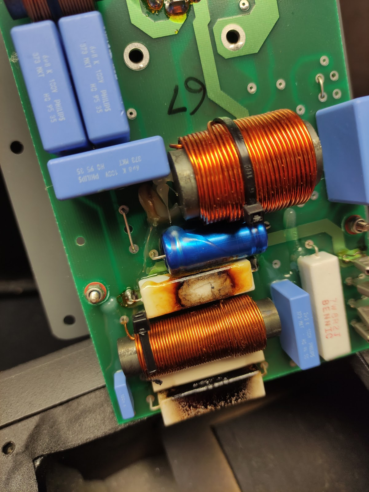
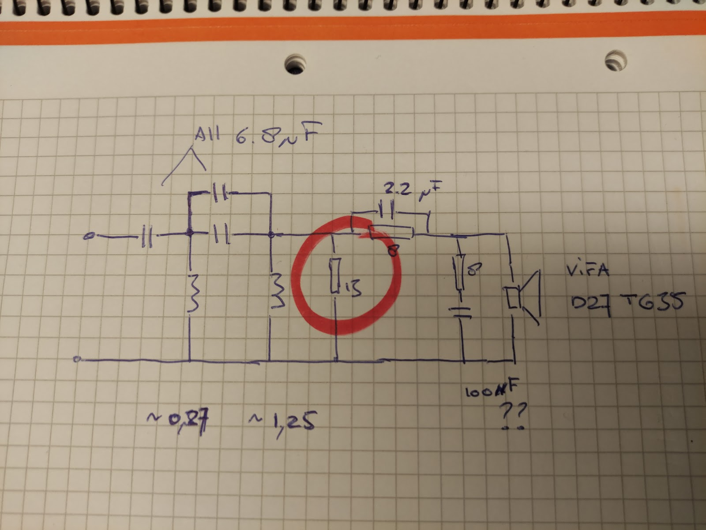
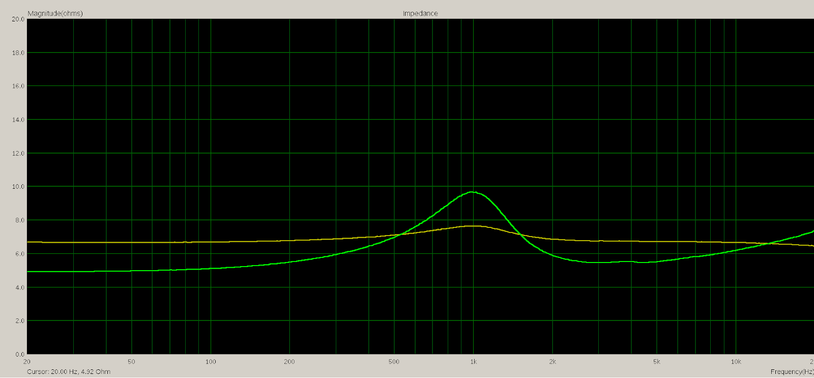
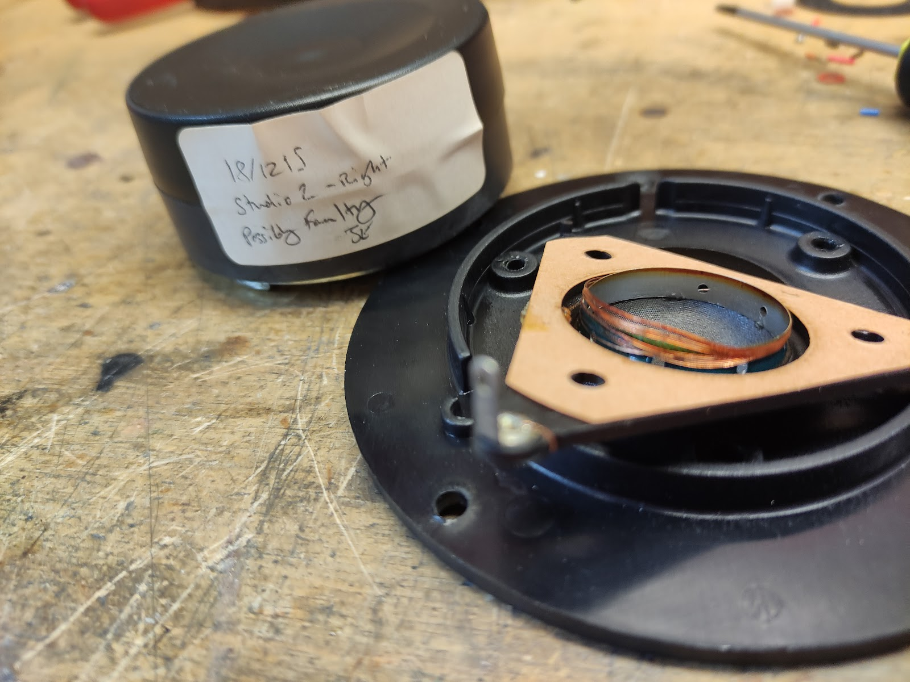
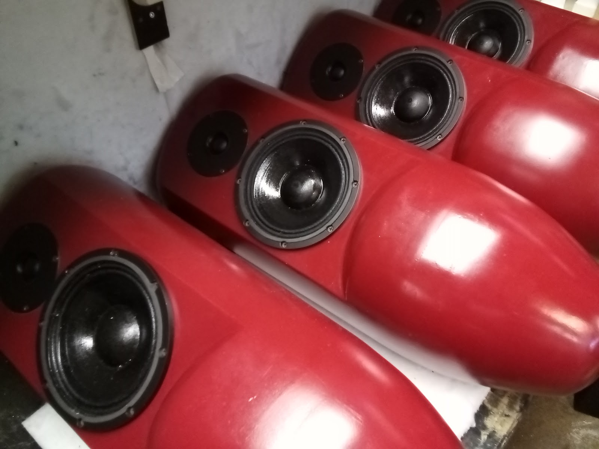

On the bench are a pair of PMC LB1 studio monitors, a box of spare tweeters and woofers, and the smell of something that has been on fire. This is a loudspeaker forensics job.
Part 1
Today some vintage PMC LB1 studio monitors arrived at my desk. For those who don't know them, follow the link for a description of these UK-manufactured benchmark loudspeakers, developed by some former BBC employees.

They came accompanied by an assorted collection of "spare" tweeters and woofers. Upon first test nothing worked as it should: we quickly found that both the 1 and 2 +/- connections of the Speakons were paralleled. That is a bit unusual, as in pro-audio we use an NL4 Speakon to feed a loudspeaker with a high/low split signal. Nowadays the majority of professional amps have two channels feeding one Speakon, so the box effectively shorts the two channels. Not good. Oh well, easily sorted.


Still not very good sound. So let's open it up: and behold and wonder, some fire has been inside. Now this really made me curious. I know the loudspeakers have been driven with Bryston 4B amps (not too shabby!), so an underpowered clipping amp couldn't be the reason.
So let's investigate. First thing I did was try to find a schematic for this crossover online. No luck. So I drew it up myself:


Now, to get an idea of the design philosophy, we examine the component values closely. Immediately the doubling of C1 versus C2 (6.8 µF) springs out, pointing to a textbook Linkwitz-Riley 24 dB filter. In those days modelling software (like LinearX Leap) was available but apparently not widespread. (I acquired my copy somewhere in 1996.) So we could investigate this pointer further. I desoldered the two coils and measured them. Not very accurately, but both values and, even more, their ratio (1:4.5) prove this is indeed a textbook LR filter.
To determine the crossover frequency they designed, we have to do a bit of guesswork, because you have to know the impedance with which the filter is terminated. What if they just took the DC 6-ohm resistance mentioned on the tweeter? (Of course this is not correct, but read on.) In that case the crossover will work as an electrically perfect 24 dB LR crossover at 2100 Hz.
Anybody who has dabbled a bit in passive crossover design knows the horrors: components all interact with each other, are never ideal (parasitic inductance/capacitance), and the terminating impedance is never a constant, ohmic resistance. So yes, changing capacitors for different brands (with the same value, duh) will have an impact on the sonic behaviour of a filter. But that is a different story.
First, let's measure the tweeters to see if that terminating resistance is indeed more or less a constant 6 ohms.
And yes: the green line is an impedance measurement of the raw driver. That is rather flat to begin with, so one immediately thinks: ferrofluid. Indeed, in the '90s that was considered quite the bomb. Some manufacturers used ferrofluid in everything, even 15-inch speakers (bad idea!).


One of the spare tweeters had a note saying "possibly faulty", so I opened it up to find out. Now, opening drivers and, in general, reconing or refitting new membranes is not a good idea (with nowadays' manufacturing tolerances), but that is another rant. This tweeter was "possibly" faulty anyway. Yes, JL (in 2015), this tweeter is definitely faulty. I might even say totally foobarred. But also filled with a bit of dried ferrofluid, so: confirmed!


Now, what type/brand of tweeter would this be? They look awfully familiar. And surprise, surprise: when I pulled away some PMC branding sticker, I found the original VIFA D27TG35 sticker. Take note of that exact number, because this is remarkable. In that same era (somewhere in the '90s) I designed and manufactured a small multipurpose loudspeaker (maybe 100 units) with that exact same tweeter. When they went out of production I bought the remaining stock, and that was the end of that build. (Fairly recently I did a restoration of one of those installs.)


And no, some Peerless or Vifa-rebranded tweeter with a similar number will not be a replacement. But you can have your own opinion; nobody will get hurt.
Onwards with the filter, because some components still need explaining: more precisely, the burned resistor(s). The first is a series resistor with a parallel capacitor. This serves as an attenuator for the tweeter and also as a slight top boost (ferrofluid, y'know) with a +3 dB point at 9 kHz. Fair enough. But it makes the filter "see" a higher load.
But what is that 100 nF (with a series 8 ohm) doing there? Those values make no sense at all; it does precisely nothing in the audible band. And as a Zobel network (to stabilise amp load) it is nonsense in that position. Oh well, a brainfart from the designer??
So this leaves the one resistor that is paralleled with the combined load of tweeter and attenuator to get back to the correct load for the LR filter. From a designer's perspective this is an awful solution: that resistor will get hammered with a lot of power, so no wonder it is burned. Previous repairs show an also way-too-small 13-ohm resistor installed. That's an odd value. Not likely, in my opinion.
Back to the measurement above: if I insert a 10-ohm resistor and remeasure the tweeter with attenuator, I got that yellowish line — an almost flat, straight 6 ohms, which brings us back to the desired flat 6-ohm line for our LR network topology.
Now, how's that for loudspeaker forensics?